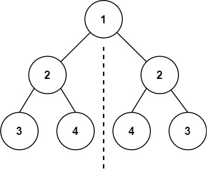
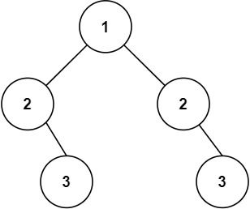

101. 对称二叉树
递归比较一对镜像结点 (l, r)：值相等，且 (l.left, r.right)、(l.right, r.left) 这两对也都对称。
思路
- 从根的左右孩子开始，
mirror(l, r)判断一对镜像位置的结点。 - 一空一不空直接
false，两个都空是true：一行if (l == null || r == null) return l == r;全覆盖。 - 值相等后比外侧对
(l.left, r.right)和内侧对(l.right, r.left)，方向别记反。 - 三项都成立这对才对称；任何一对失败，整棵树就不对称。
图解
最优解
1class Solution {2 public boolean isSymmetric(TreeNode root) {3 return mirror(root.left, root.right);4 }5 6 // 比较一对镜像位置的结点：l 来自左子树，r 来自右子树7 private boolean mirror(TreeNode l, TreeNode r) {8 // 一空一不空：不对称；两个都空：对称9 if (l == null || r == null) return l == r;10 return l.val == r.val11 && mirror(l.left, r.right)12 && mirror(l.right, r.left);13 }14}题目
给你一个二叉树的根节点 root ， 检查它是否轴对称。
示例 1：

输入：root = [1,2,2,3,4,4,3] 输出：true
示例 2：

输入：root = [1,2,2,null,3,null,3] 输出：false
提示：
- 树中节点数目在范围
[1, 1000]内 -100 <= Node.val <= 100
进阶：你可以运用递归和迭代两种方法解决这个问题吗？
题面取自力扣当前版本。
数据快照 2026-11-04。题面版权归力扣所有，本站点仅供本人学习使用，请勿对外发布。